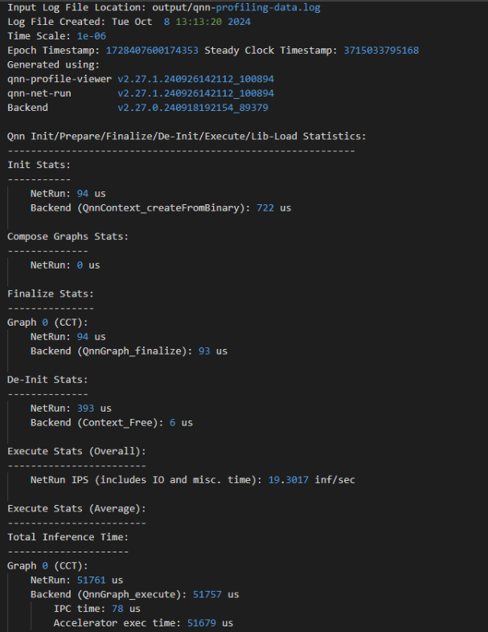
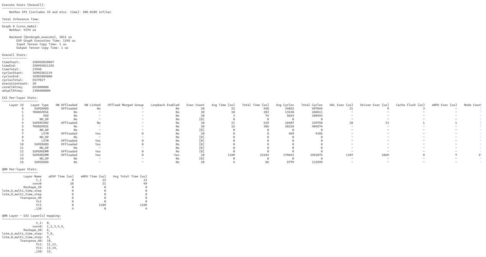

QNN LPAI Profiling¶
QNN supports two profiling modes:
Per API Profiling: Captures profiling data for individual QNN API calls. This mode provides fine-grained visibility into the performance of each API invocation.
Graph Continuous Profiling: Captures profiling data across the entire graph execution, offering a holistic view of performance across layers and operations.
Note
The LPAI backend currently supports only Per API Profiling.
Supported profiling modes for LPAI:
✅ Per API Profiling
❌ Graph Continuous Profiling
Refer to the following sections for more details:
Profiling Initialization¶
To enable profiling in the QNN runtime, the following steps must be taken during initialization:
Set Profiling Level
Use the –profiling_level command-line argument when invoking qnn-net-run. Supported values:
basic: Enables essential profiling events.
detailed: Enables all available profiling events, including backend-specific metrics.
Ensure Profiling is Enabled in the Backend Configuration
The backend configuration file (if applicable) must allow profiling. This may include enabling flags such as:
enableProfiling: true
profilingOutputPath: <directory>
Initialize QNN Context with Profiling Support
When creating the QNN context (e.g., via QnnContext_createFromBinary), ensure that profiling is not disabled by any runtime flags or environment variables.
Execution and Logging
During graph execution, profiling data is collected and written to log files in the output directory. These logs are automatically named and versioned.
Note
Profiling introduces some runtime overhead. For performance-sensitive deployments, it is recommended to disable profiling in production environments.
Basic Profiling¶
Basic profiling is designed to provide a lightweight overview of performance-critical operations within the QNN runtime and backend. It is ideal for quick diagnostics, regression testing, and high-level performance monitoring with minimal overhead.
Scope of Basic Profiling:
QNN API-Level Events:
Measures the execution time of key QNN API calls:
QnnContext_createFromBinary: Time taken to deserialize and initialize the context.
QnnGraph_finalize: Time to finalize the graph before execution.
QnnGraph_execute: Time spent executing the graph.
QnnContext_free: Time to release context resources.
Backend-Specific Events:
IPC Time: Time spent in inter-process communication between host and backend.
Accelerator Execution Time: Time taken by the hardware accelerator to execute the graph.
Use Case:
Suitable for developers who want a quick snapshot of performance without deep granularity.
Helps identify high-level bottlenecks in API usage or backend execution.
LPAI Basic Profiler

Detailed Profiling¶
Detailed profiling provides a comprehensive view of the execution behavior of a QNN graph on the LPAI backend. It includes all events captured in basic profiling, along with a richer set of backend-specific metrics. This mode is intended for advanced performance analysis, debugging, and optimization.
Includes all events from Basic Profiling, plus:
Additional Backend-Specific Events:
Inference Preparation Time: Measures the time spent preparing the inference pipeline before actual execution. This includes memory allocation, data layout transformations, and other setup tasks.
Per-Layer Execution Time: Captures the execution time of each individual layer in the graph. This helps identify performance bottlenecks at the layer level and is useful for fine-tuning model performance.
Layer Fusion Information: Indicates which layers were fused together by the backend for optimized execution. Fusion can reduce memory access overhead and improve throughput.
Layer Linking Information: Provides insights into how layers are connected and scheduled for execution. This can help understand execution dependencies and parallelism opportunities.
These detailed metrics are especially useful for:
Diagnosing performance regressions
Understanding backend optimizations
Identifying layers with high latency
Verifying the effectiveness of layer fusion and scheduling strategies
Use Case:
Recommended for backend developers and performance engineers.
Enables root-cause analysis of latency issues and validation of backend optimizations.
LPAI Detailed Profiler

Enable Profiling in qnn-net-run¶
To enable profiling, use the –profiling_level command-line option:
–profiling_level basic
–profiling_level detailed
A profiling log file will be generated in the output directory:
The log file is named qnn-profiling-data_x.log, where x is the execution index.
A symbolic link qnn-profiling-data.log will point to the latest log file.
Example:
If the graph is executed three times, the following files will be generated:
qnn-profiling-data_0.log
qnn-profiling-data_1.log
qnn-profiling-data_2.log
qnn-profiling-data.log → qnn-profiling-data_2.log
Visualize Profile Data with qnn-profile-viewer¶
The qnn-profile-viewer tool provides a convenient way to visualize profiling data generated by the LPAI backend. To support extended profiling capabilities for LPAI, the tool dynamically loads the libQnnLpaiProfilingReader.so library.
The libQnnLpaiProfilingReader.so library parses the LPAI raw profiling output and translates it into a structured, human-readable format. This enables developers and performance analysts to gain deeper insights into model execution characteristics, identify bottlenecks, and optimize performance across various stages of the neural network pipeline.
Usage:
Push the qnn-profile-viewer tool¶
$ adb push ${QNN_SDK_ROOT}/bin/aarch64-android/qnn-profile-viewer /data/local/tmp/LPAI
Set up the environment on the device¶
$ adb shell
$ cd /data/local/tmp/LPAI
$ export LD_LIBRARY_PATH=/data/local/tmp/LPAI
Execute the profiling viewer by using qnn-profile-viewer¶
$ ./qnn-profile-viewer --input_log PROFILING_LOG1 --output ./out.csv --reader ./libQnnLpaiProfilingReader.so